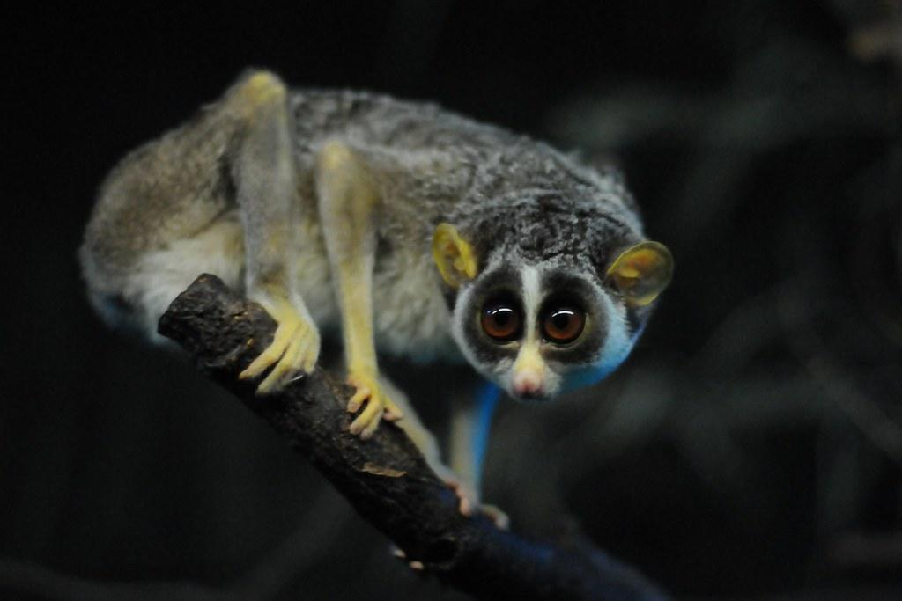
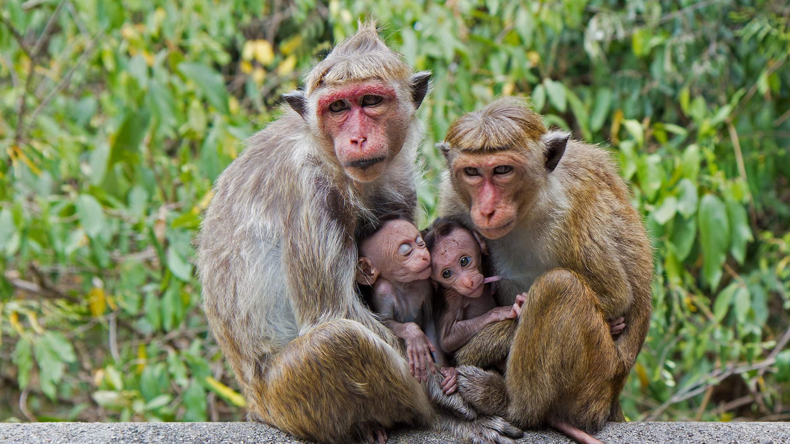
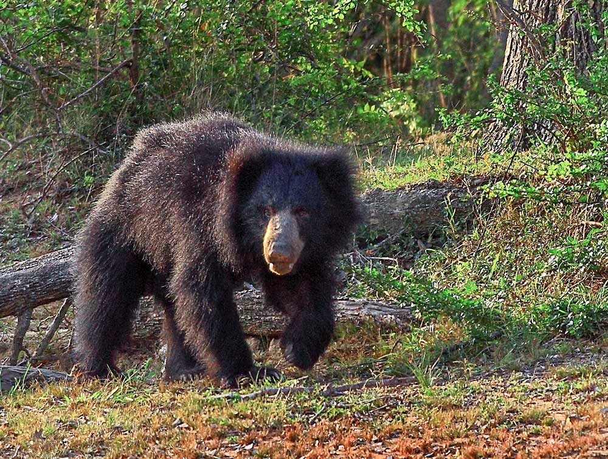

<DOCTYPE.html>
    <html>
        <head>
            
            <title>Sri lankan Wildlife</title>
            <link rel="stylesheet" href="home.css">
             <link rel="icon" href="images/favicon.ico.png" type="image/x-con">
        </head>
        <header>
            <div class="secmain">
            <div class="divh" id="animalshead">
             <a href="index.html"> </a>
           
            
            <nav>
               <ul class="navbar">
                <li><a href="index.html">Home</a></li>
                <li><a href="introdution.html">Introduction</a></li>
                <li><a href="department.html">Department</a></li>
                <li><a href="Srileo.html">Leopard</a></li>
                <li><a href="animals.html">Animals</a>
                   <ul class="dropdown">
                    <li><a href="yala.html">Yala Park</a></li>
                    <li><a href="wilpattuwa.html">Wilpattu Park</a></li>
                  </ul>
                    <li><button class="btn1" id="srileo">Login</button></li>
                </li>
               
             
            </ul>
               
             
              </nav>
              <h1 class="h1main">Animals in SriLanka</h1>
               </div>
               
              </div>
            </div>
            
                  
                  
    </header>
        <body class="bodyd">
            <div class="anima">
           
           <!-- <br> 
                <div>
                    <section class="n70">
                        
                        <h2 class="h2"><u>Red Slender Loris</u></h2>
                        
                        <div class="divan3">
                        <p class="anipt">The red slender loris (Loris tardigradus ) is a small, nocturnal strepsirrhine primate native to the rainforests of Sri Lanka.This is No. 6 of the 10 focal species and No. 22 of the 100 EDGE mammal species worldwide considered the most evolutionarily distinct and globally endangered. </p>
                        
                        <p class="anipt">Lorises are slow climbing, nocturnal animals with large distinctive eyes. They are adapted to an arboreal lifestyle (a life among trees), which is assisted by skeletal specialisations such as highly mobile joints, large humerus, strong bones, equally long fore and hind limbs with super strong digits, and anatomical modifications such as a shortened tip of the ulna to the dimensions of a styloid process.</p>
                        </section>
                    </div>
                </div>
                
                <hr class="hrd">
                 <br>
                 <div>
                    <section class="n70">
                        
                        <h2 class="h2"><u><b>Toque macaque</b></u></h2>
                        
                        <div class="divan3">
                        <p class="anipt">This smallest macaque is a native Sri Lankan species with a golden-brown fur. The local people call Toque Macaque the “Rilawa”. The most characteristic feature of this primate is the toque-like swirl of hair on its head top.</p>
                        <p class="anipt"> As a matter of fact, their physiological characteristics vary greatly, depending on climatic conditions. Thus, populations in cooler climate exhibit thick, dark brown coat as well as relatively short limbs and tails. Meanwhile, those inhabiting lowland rainforests typically display reddish or golden fur and longer bonnets.</p>
                        </div>
                        
                        
                </div>
                <hr class="hrd">
                <br>
                <div>
                    <section class="n70">
                        
                        <h2 class="h2"><u>Purple Faced Fungur</u></h2>
                        
                        <div class="divan3">
                        <p class="anipt">Purple-faced langurs (Semnopithecus vetulus), also known as purple-faced leaf monkeys, are endemic to Sri Lanka. In Sinhala, one of the official languages of Sri Lanka, they are known as “the black monkey of Sri Lanka.” Located near the southern tip of India, the tropical island of Sri Lanka is teeming in biodiversity.</p>
                        <p class="anipt">This is thanks in part to its varying landscapes and climates. The perimeter is dusted with sandy beaches and the valleys and rivers of the plains make up a large portion of the island. In the south-central area lies the highlands, also known as the wet zone, with its mountain ridges and tall rainforests—this is where purple-faced langurs call home.</p>
                        </div>
                    </section>
                </div>
              
                <hr class="hrd">
                <div>
                    <section class="n70">
                        
                        <h2 class="h2"><u>Sri Lankan Jungle Fowl</u></h2>
                        
                        <div class="divan3">
                        <p class="anipt">The Sri Lankan junglefowl (Gallus lafayettii sometimes spelled Gallus lafayetii), also known as the Ceylon junglefowl or Lafayette's junglefowl, is a member of the Galliformes bird order which is endemic to Sri Lanka, where it is the national bird. </p>
                        <p class="anipt">It is closely related to the red junglefowl (G. gallus), the wild junglefowl from which the chicken was domesticated. However, a whole-genome molecular study rather show that Sri Lankan junglefowl and grey junglefowl are genetically closer species than the red junglefowl.</p>
                        </div>
                    </section>
                </div>
             
                <hr class="hrd">
                <div>
                    <section class="n70" >
                        
                        <h2 class="h2" ><u>Sri lankan sloth Bear</u></h2>
                        
                        <div class="divan3">
                        <p class="anipt">Bear! The very word may strike terror in the hearts of some, but unknown to many, this wonderful creature is on the brink of extinction in Sri Lanka, with its numbers very drastically reduced, its habitats decimated, and the hand of man firmly turned against him out of abject fear.</p>
                        <p class="anipt">Many men of the jungle have told me they would rather face the charge of an elephant, as there is still some chance of escape. Whereas with the terrible “close quarters charge” of the sloth bear (Melursus ursinus), there is none. Add that to the distinct possibility of being blinded, disfigured, or losing a limb or two, the reasons for fear and animosity toward this creature are very clear.</p>
                        </div>
                    </section>
                </div>
                <br>
                <h1 class="h2" id="n80">Top Rated Wild Life Locations In Sri lanka </h1>
                <section class="n70" >
                    <div class="anilink" id="ani1">
                       <h2 class="head1" ><u> Wilpattu National Park</u></h2>
                       
                     
                         
                         <div class="div2">
                         <p class="anipt">Experience Sri Lanka’s most elusive wildlife in the vast seclusion of Wilpattu National Park</p>
                            <p class="anipt"> Occupying a vast swathe of land bordering the copper-sand beaches of the north west coast,</p>
                               <p class="anipt">the ancient ruins of the Cultural Triangle and the Northern Province this is Sri Lanka’s largest and oldest game reserve. Home to myriad endemic species.<br> <a class="an" href="wilpattuwa.html" target="_blank">Click here to read more</a></p>
                       </div>
                    </div>
                    <br>
                    
                </section>
                
                <br>
                <section class="n70" >
                    <div class="anilink" id="ani2">
                       <h2 class="head1" ><u>Yala National Park</u></h2>
                         
                       
                         <div class="div1"  >
                       <p class="anipt" >Yala National Park (otherwise known as Ruhuna National Park) is one of Sri Lanka’s must-sees.</p> 
                        <p class="anipt" >Located to the south east of the island, this exceptional game reserve is Sri Lanka’s most popular for very good reason.</p> 
                        <p class="anipt" >Thought to be home to the greatest density of leopards per square kilometre in the world.<br><a class="an" href="yala.html" target="_blank">Click here to read more</a></p>
                    
                       
                        
                         </div>
                    </div>
                </section>

                
        </body>
        <br>
        <footer class="footer">
            <div>
                <p>&copy; 2024 Srilankan WildlLife. All rights reserved.</p>
                <!-- endemic-animals. (n.d.). Retrieved from animalia.bio: https://www.animalia.bio/endemic-lists/country/endemic-animals-of-sri-lanka
                 LIBRARY, F. & B.P. (n.d.). Purple-faced Langur - Stock Image - F031/3959. [online] Science Photo Library. Available at: https://www.sciencephoto.com/media/1133660/view/purple-faced-langur [Accessed 14 Jan. 2024].
lovidhu.com. (n.d.). Sri Lankan Junglefowl. [online] Available at: https://www.lovidhu.com/animals/article/sri-lankan-junglefowl [Accessed 14 Jan. 2024].
nandithachandraprakash (2023). Environmentalists denounce Sri Lanka’s talks of exporting 100,000 crop-raiding macaques. [online] Mongabay-India. Available at: https://india.mongabay.com/2023/05/environmentalists-denounce-sri-lankas-talks-of-exporting-100000-crop-raiding-macaques/ [Accessed 14 Jan. 2024].
Nature Trails. (n.d.). Sri Lankan Sloth Bear | Cinnamon Nature Trails Sri Lanka. [online] Available at: https://www.cinnamonnaturetrails.com/the-wildlife/sloth-bear.html.
neprimateconservancy.org. (2021). Red Slender Loris, Loris tardigradus | New England Primate Conservancy. [online] Available at: https://neprimateconservancy.org/red-slender-loris/ [Accessed 14 Jan. 2024].

                </div>

        </footer>-->
                </div>
        <script src="animal.js"></script>
        
    </body>

    </html>
